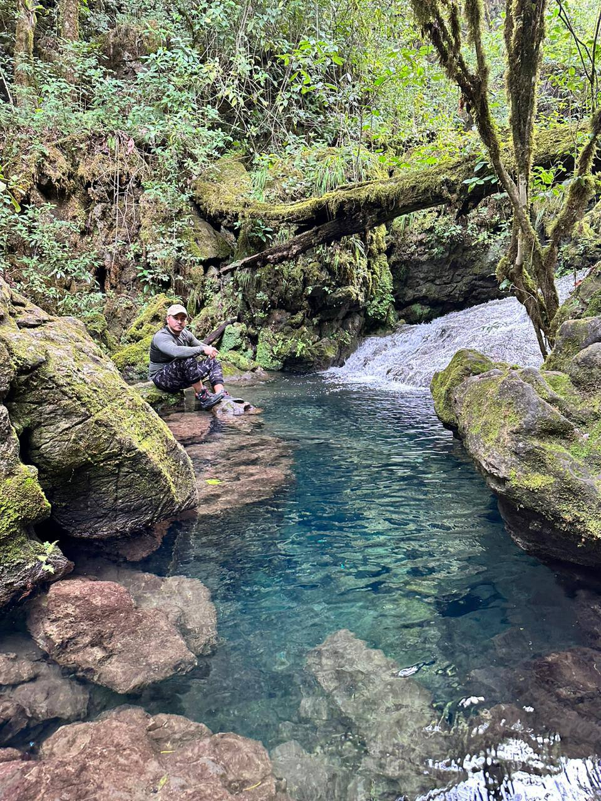
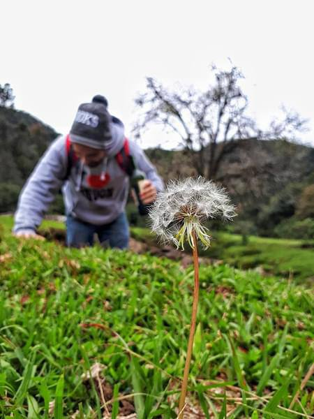
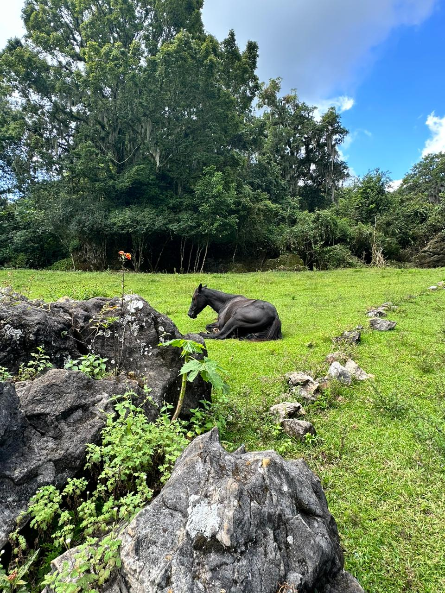
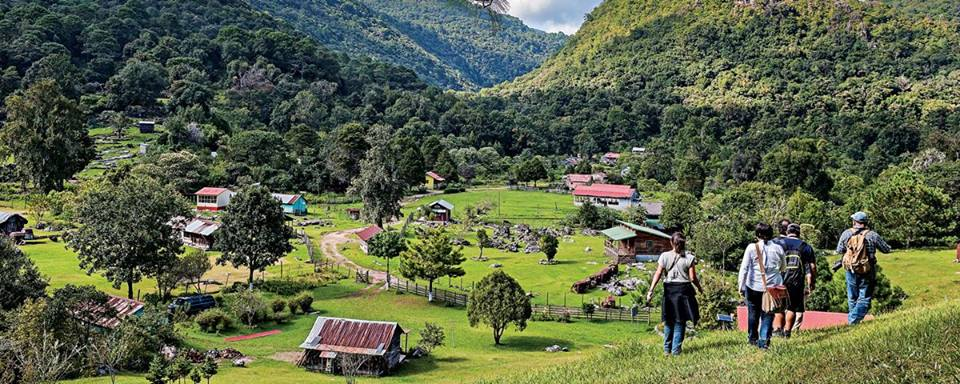
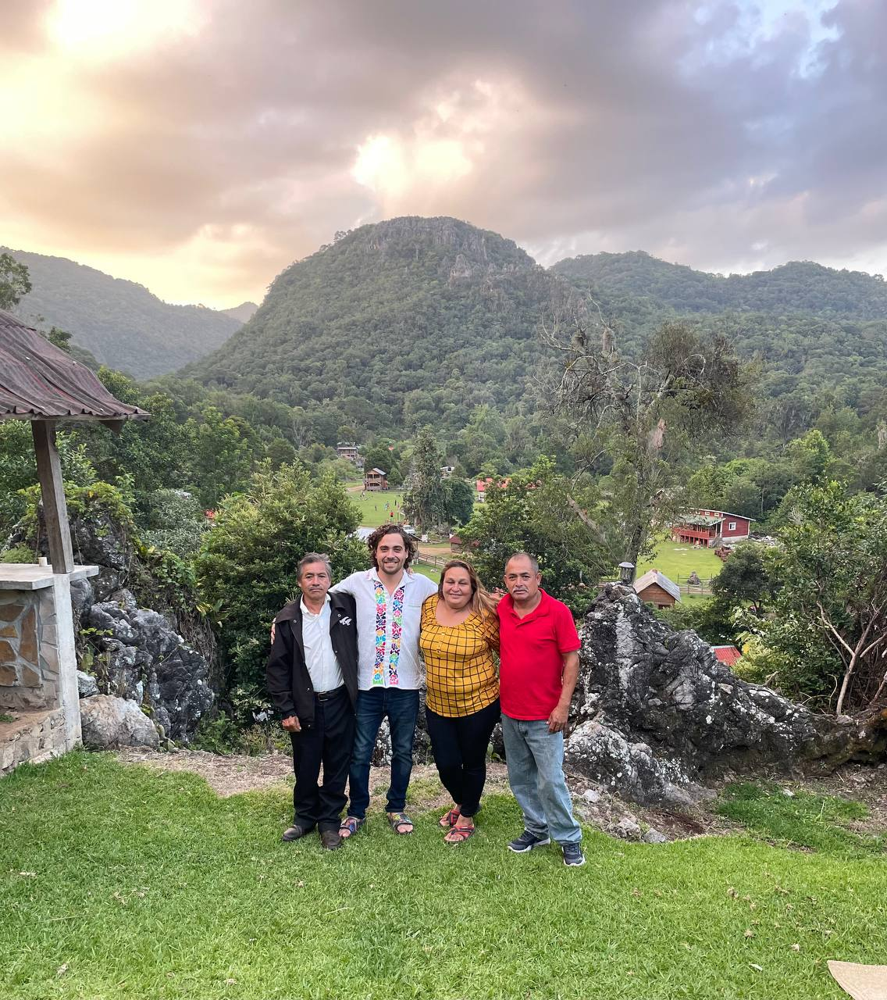
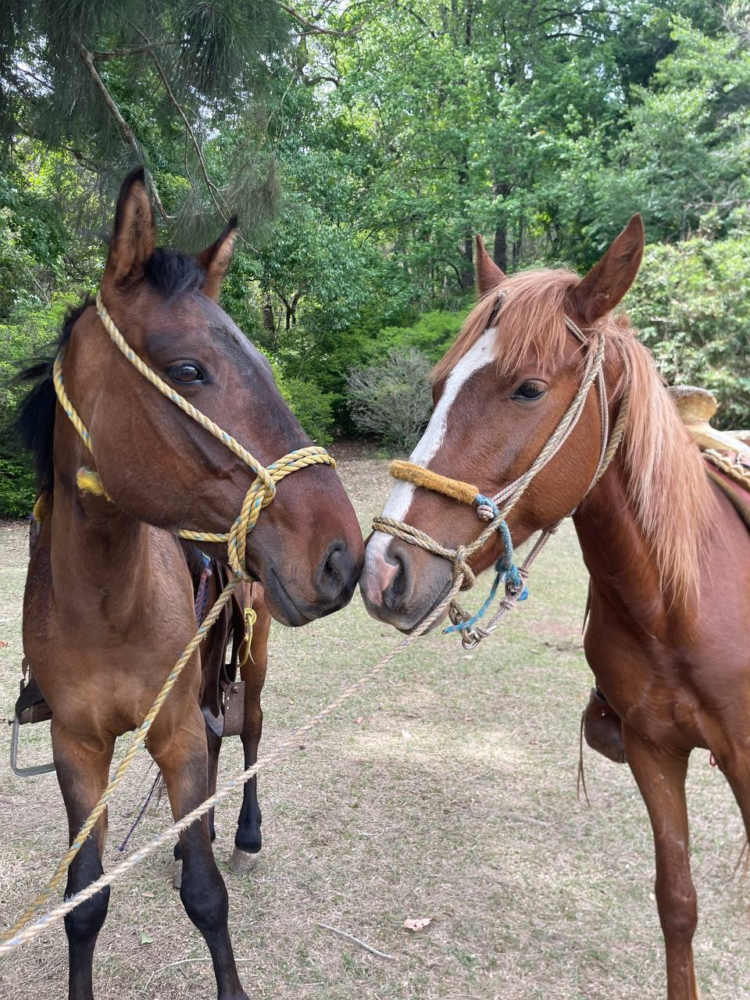
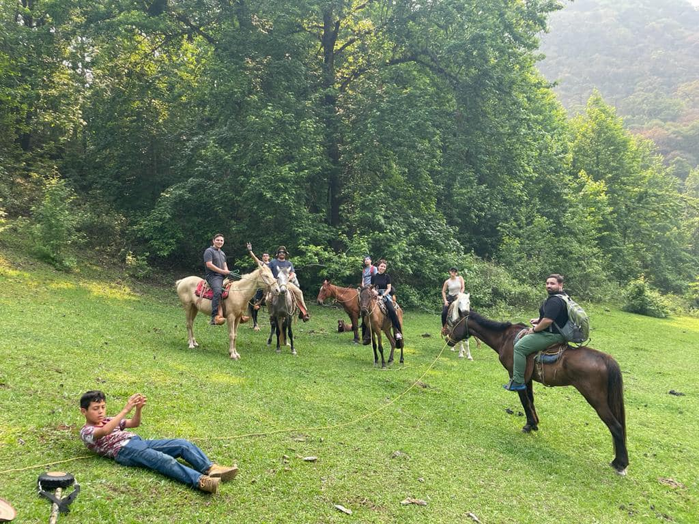
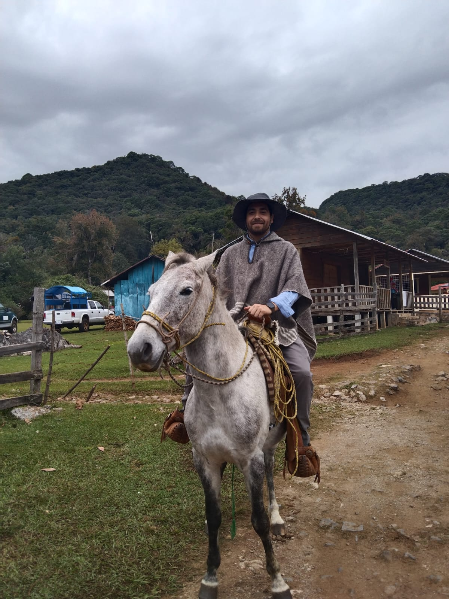
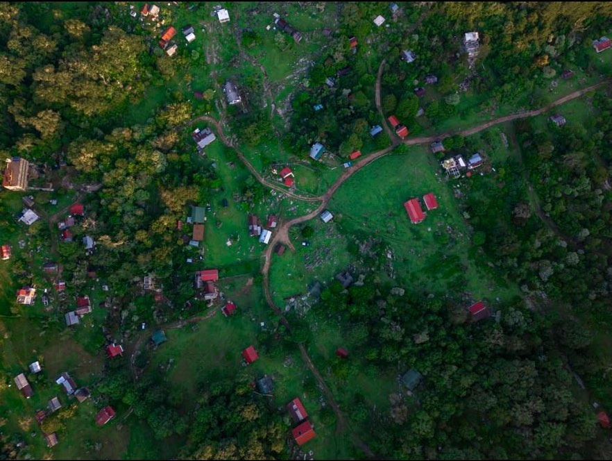
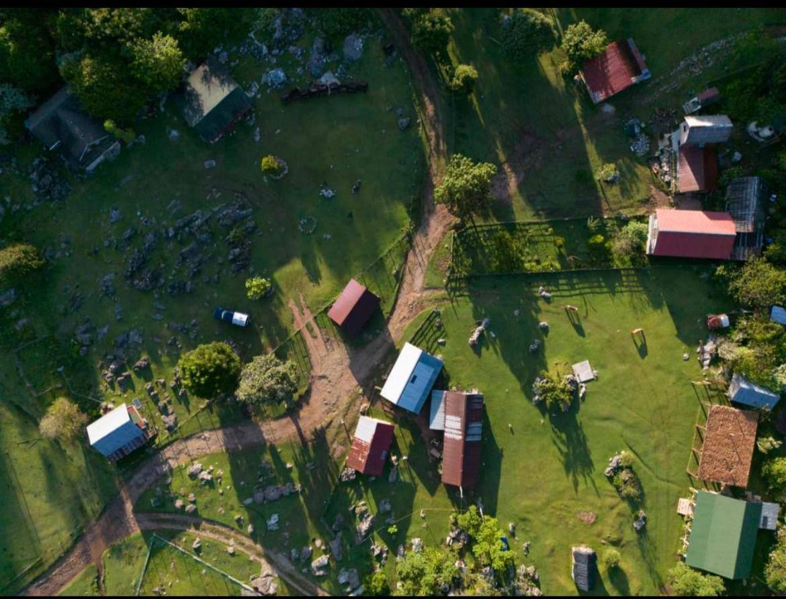

Los datos duros de la Reserva de la Biosfera El Cielo
Cifras de la Comisión Nacional de Áreas Naturales Protegidas, la Universidad Autónoma de Tamaulipas y la obra Historia natural de la Reserva de la Biosfera El Cielo. Los conteos varían entre fuentes porque la reserva sigue inventariándose: aquí usamos los rangos más citados.
¿Qué animales hay en El Cielo, Tamaulipas?
El Cielo es el punto donde el trópico mexicano llega a su límite norte y choca con la sierra templada. Ese cruce explica todo: aquí un tucán y un oso negro viven a menos de 20 kilómetros de distancia, algo que no pasa en ningún otro lado del país.
El dato que más impresiona a los biólogos no es el número total, sino la lista completa de felinos. En El Cielo están registradas las seis especies de felinos silvestres de México: jaguar, puma, ocelote, margay (tigrillo), jaguarundi y lince. Muy pocas áreas protegidas del país pueden decir lo mismo.
En aves, la reserva reúne unas 430 especies —cerca de 255 residentes y 175 migratorias que bajan del norte del continente cada invierno—. Es la razón por la que El Cielo aparece en los itinerarios de birders de Texas y del noreste de México.
Entre los mamíferos que sí es realista ver o rastrear en un recorrido guiado están el coatí, el cacomixtle, la ardilla de roca, el tlacuache, el temazate y, con mucha suerte y cámara trampa, la martucha y la tayra. Los grandes felinos y el oso negro existen, pero son fantasmas: se detectan por huellas, excretas y cámaras, no a la vista.
En la Cueva del Agua vive fauna troglobia: organismos acuáticos que evolucionaron sin ojos y sin pigmentación porque nunca han visto la luz.

Nacimiento de agua en la parte alta. El musgo y las hepáticas sobre la roca son el indicador visual de que estás dentro del bosque de niebla.
¿Qué plantas hay en la Reserva El Cielo?


El suelo de El Cielo es karst: roca caliza disuelta por el agua. Esa geología es la que crea las cuevas, los sótanos y los nacimientos de agua.
Se han documentado más de 1,128 especies de plantas, de las cuales 743 son árboles y arbustos, 9 son endémicas y 38 están amenazadas o en peligro de extinción. Súmale 72 especies de orquídeas y 481 de hongos.
La estrella es el bosque mesófilo de montaña —el bosque de niebla—. Ocupa apenas cerca del 1% del territorio nacional, pero concentra alrededor del 10% de la flora de México. Protegerlo es la razón por la que existe la reserva.
Ahí crecen el liquidámbar (que se pone rojo en otoño, algo rarísimo en México), el encino jardinero, el tilo mexicano, la magnolia tamaulipana —endémica de esta sierra— y helechos arborescentes que son prácticamente fósiles vivos: linajes anteriores a las plantas con flor.
La palmilla o camedor (Chamaedorea radicalis) merece párrafo aparte: es una palma del sotobosque cuyas hojas se aprovechan legalmente por las comunidades de Alta Cima y San José para arreglos florales de exportación. Es uno de los casos de manejo comunitario más estudiados de la reserva.
Y hacia el poniente el paisaje se invierte por completo: bajando al valle de Jaumave aparecen pino piñonero, matorral xerófilo, agaves y cactáceas. Es una extensión del Desierto Chihuahuense a menos de 40 km del bosque húmedo.
Los 4 pisos de vegetación: ¿qué hay a cada altitud?
De los 200 a los 2,300 metros sobre el nivel del mar el bosque cambia cuatro veces. Sube el control y mira qué ecosistema estás pisando, qué plantas lo forman y qué animales viven ahí.
{{ piso.desc }}
Catálogo de especies de El Cielo: busca la que te interesa
Escribe un nombre común o científico, o filtra por grupo y estado de conservación. Cada ficha trae el piso de vegetación donde vive y un dato que casi nadie sabe.
Estado de conservación según la NOM-059-SEMARNAT-2010 y la Lista Roja de la UICN. Catálogo ilustrativo: la reserva tiene cientos de especies más.
Cuadros comparativos: El Cielo en contexto
Cuatro tablas para decidir a dónde ir, cuándo y qué esperar. Desliza horizontalmente en celular.
1. Los 4 ecosistemas de El Cielo, lado a lado
Por qué caben cuatro bosques distintos en una sola reserva.
| Ecosistema | Altitud | Lluvia / temp. | Especies emblema | Dónde verlo |
|---|---|---|---|---|
| Bosque tropical subcaducifolio (selva baja) | 200 – 800 m | ~1,200 mm · 23-24 °C | Chaca, guanacaste, higuera; tucán de collar, momoto, tinamú | Gómez Farías y el arranque de la brecha |
| Bosque mesófilo de montaña (bosque de niebla) | 800 – 1,400 m | 1,800-2,500 mm · 16-19 °C | Liquidámbar, magnolia tamaulipana, helecho arborescente, palmilla; chara verde, martucha | Alta Cima y el camino a San José |
| Bosque de encino-pino | 1,400 – 1,900 m | ~1,200 mm · 13-16 °C | Encinos, pino teocote, orquídeas y bromelias; oso negro, guajolote silvestre | San José y La Gloria |
| Coníferas y matorral xerófilo (vertiente poniente) | 1,900 – 2,300 m | 400-800 mm · 10-14 °C | Pino piñonero, agaves, cactáceas; ardilla de roca, zorra gris | Cumbres y bajada al valle de Jaumave |
2. ¿El Cielo u otra reserva de bosque de niebla?
Comparado con las otras grandes reservas mexicanas de bosque mesófilo. Cifras aproximadas de superficie decretada y riqueza de aves.
| Reserva | Estado | Superficie | Aves aprox. | Ventaja |
|---|---|---|---|---|
| El Cielo | Tamaulipas | 144,530 ha | ~430 | El bosque de niebla más al norte del continente; a 4-5 h de Monterrey y ~2.5 h de Tampico |
| El Triunfo | Chiapas | ~119,000 ha | ~400 | Quetzal y pavón de cuerno; acceso largo, expedición de varios días |
| Sierra Gorda | Querétaro | ~383,000 ha | ~360 | Más grande y con misiones históricas; menos bosque de niebla continuo |
| Los Tuxtlas | Veracruz | ~155,000 ha | ~560 | Más aves y volcanes junto al mar; más húmedo y más turístico |
3. ¿Parte baja o parte alta? Gómez Farías vs. San José
La decisión que realmente cambia tu viaje.
| Criterio | Gómez Farías · parte baja | San José · parte alta |
|---|---|---|
| {{ r.k }} | {{ r.baja }} | {{ r.alta }} |
4. Aves residentes vs. aves migratorias
Cuál es la diferencia y cómo cambia tu lista según el mes en que vengas.
| Criterio | Residentes | Migratorias |
|---|---|---|
| {{ r.k }} | {{ r.a }} | {{ r.b }} |
¿Qué especies en peligro de extinción hay en El Cielo?
De las plantas leñosas registradas, 38 están amenazadas o en peligro y 9 son endémicas. En fauna, El Cielo concentra el 50% de los vertebrados endémicos de Tamaulipas. Estas son las que más importan.
Cómo visitar sin dañar: no colectes plantas ni orquídeas, no alimentes fauna, quédate en los senderos, no uses drones sobre zonas de anidación, contrata guías y hospedaje de las comunidades de la reserva y saca toda tu basura. El turismo bien hecho es hoy uno de los principales ingresos legales de Alta Cima y San José —y esa es la razón por la que el bosque sigue en pie.
¿Cuál es la mejor época para visitar El Cielo?
Depende de qué quieras ver. Toca un mes y te decimos qué está pasando en el bosque, cómo está el camino y qué tan lleno está.
{{ mes.que }}
Así se ve la reserva por dentro







Preguntas frecuentes sobre la fauna y flora de El Cielo
Lo que la gente busca en Google antes de venir, respondido sin rodeos.
{{ f.a }}
In English · Wildlife and plants of the El Cielo Biosphere Reserve, Tamaulipas
What animals live in El Cielo, Tamaulipas? Roughly 430 bird species (about 255 resident and 175 migratory), 92 mammal species, more than 60 reptiles and over 20 amphibians. El Cielo is one of the few protected areas in Mexico that holds all six of the country's wild cats: jaguar, puma, ocelot, margay, jaguarundi and bobcat. Black bear, coati, ringtail, kinkajou and tayra are also present.
What plants grow there? Over 1,128 documented plant species, including 743 trees and shrubs, 9 endemics, 38 threatened or endangered species and 72 orchids. The cloud forest — sweetgum, Tamaulipan magnolia, Mexican basswood, tree ferns and the understory Chamaedorea palm — is the reserve's core protected ecosystem.
Why it matters: 144,530 hectares spanning 200 to 2,300 m of elevation, four distinct vegetation belts, and the northernmost tropical cloud forest in the Americas. State-decreed in 1985 and part of the UNESCO Man and the Biosphere network since 1986.
Best time to visit: October to March for migratory birds and cool, dry weather; March to November for monarch butterfly passage; June to September for the greenest forest and fullest rivers, but expect rain and rough dirt roads. A 4x4 vehicle or local transport is required to reach San José.
Booking: guided tours, cabins and glamping with local guides from Gómez Farías and San José — message us on WhatsApp.